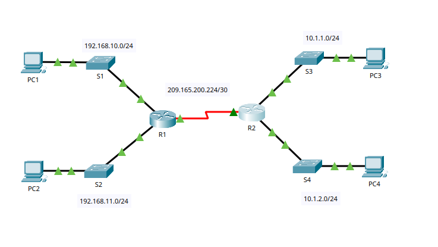
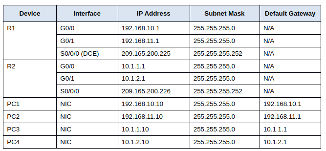
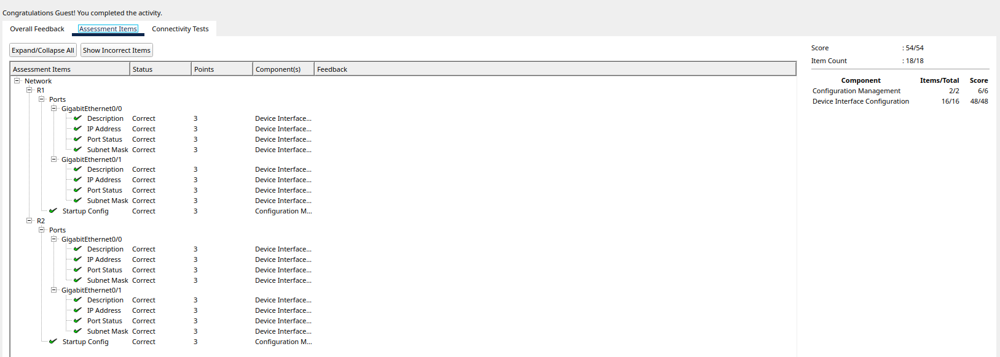

Lab 8. Packet Tracer - Connect a Router to a LAN

By An Le
In lab 8 - Connect a Router to a LAN, we will check the current state of the router. Use the provided addressing table to configure the router Ethernet interfaces. And use the commands to verify and test the configuration.
Part 1: Display Router Information
Step 1 - Display interface information on R1
To access the routers, navigate to the CLI, and access using the console password, cisco. And the privileged EXEC password is class.
To display the statistic for all interfaces configured on a router, use command
show interfaces.
To display just for Serial 0/0/0 interface only, use command
show interfaces serial 0/0/0. The result should show something like this:
Serial0/0/0 is up, line protocol is up (connected)
Hardware is HD64570
Internet address is 209.165.200.225/30
MTU 1500 bytes, BW 1544 Kbit, DLY 20000 usec,
reliability 255/255, txload 1/255, rxload 1/255
Encapsulation HDLC, loopback not set, keepalive set (10 sec)
Last input never, output never, output hang never
Last clearing of "show interface" counters never
Input queue: 0/75/0 (size/max/drops); Total output drops: 0
Queueing strategy: weighted fair
Output queue: 0/1000/64/0 (size/max total/threshold/drops)
Conversations 0/0/256 (active/max active/max total)
Reserved Conversations 0/0 (allocated/max allocated)
Available Bandwidth 1158 kilobits/sec
5 minute input rate 147 bits/sec, 0 packets/sec
5 minute output rate 54 bits/sec, 0 packets/sec
250 packets input, 15728 bytes, 0 no buffer
Received 0 broadcasts, 0 runts, 0 giants, 0 throttles
0 input errors, 0 CRC, 0 frame, 0 overrun, 0 ignored, 0 abort
82 packets output, 5540 bytes, 0 underruns
0 output errors, 0 collisions, 0 interface resets
0 output buffer failures, 0 output buffers swapped out
0 carrier transitions
DCD=up DSR=up DTR=up RTS=up CTS=upFrom the displayed result, we can point out some information here. Like the IP address configured on
R1 is provided on line 3 Internet address is 209.165.200.255/30 and bandwidth on line 4
MTU 1500 bytes, BW 1544 Kbit, DLY 20000 usec.
Follow a similar process, we can point out some similar information for GigabitEthernet 0/0
interface:
IP address is none, as we will configure the later on. MAC address is
000d.bd6c.7d01. Bandwidth is 100000 Kbit
Step 2: Display a summary list of the interfaces on R1
To display a brief summary of the current interfaces, interface status, and the IP addresses assigned
to them, use command show ip interfaces brief.
Using this same command on R1 and R2, we can see that there are
2 serial interfaces on both R1 and R2,
6 Ethernet interfaces on R1, and 2 Ethernet interface on R2. They both have
2 Gigabit Ethernet, but R1 also have an additional 4 Fast Ethernet that is unused.
Step 3: Display the routing table on R1
To display the routing table on R1, use command show ip route. We will see that there is
1 connected route, which will route through 209.165.200.224/30. These
route is essential for device in the network to communicate efficiently, as such,
any packet that is destined for a network that is not listed in the routing table will be
dropped.
Part 2: Configure Router Interfaces

Step 1: Configure the GigabitEthernet 0/0 on R1
To configure the GigabitEthernet 0/0 interface on R1, we follow the instruction but first use the command: configure terminal, to enter the configuration mode. Then, follow the step by step instruction to configure the IP address for GigabitEthernet 0/0 as well as the description of the interface.
Step 2: Configure the remaining Gigabit Ethernet Interfaces on R1 and R2
We follow the same process for the rest of GigabitEthernet Interfaces on R1 and R2 using the
information provided in the table.
interface gigabitethernet */* - select an interface.
ip address ***.***.***.*** 255.255.255.0 - use the table to put the IP address.
no shutdown - to enable the interfaces.
description “***” - to put a description that indicates the device to which it is
connected.
Do this with all the interface, and everything is connected.
Step 3: Back up the configurations to NVRAM
In order to save it the NVRAM, we need to use command
copy running-config startup-config.
Part 3: Verify the Configuration
Step 1: Use verification commands to check your interface configurations
After all the step in part 2, we can verify both by using show ip interface brief on R1, and R2, we will see something like this:
Interface IP-Address OK? Method Status Protocol
GigabitEthernet0/0 192.168.10.1 YES manual up up
GigabitEthernet0/1 192.168.11.1 YES manual up up
Serial0/0/0 209.165.200.225 YES manual up up
Serial0/0/1 unassigned YES unset administratively down down
FastEthernet0/1/0 unassigned YES unset administratively down down
FastEthernet0/1/1 unassigned YES unset administratively down down
FastEthernet0/1/2 unassigned YES unset administratively down down
FastEthernet0/1/3 unassigned YES unset administratively down down
Vlan1 unassigned YES unset administratively down downDo this for both R1 and R2, we can see see that there is 3 IP addresses that is in the
up and up state. And because it is a brief we will not see the subnet mask. To verify the
subnet mask, we can use show ip interface.
The same can be checked on show ip route:
10.0.0.0/24 is subnetted, 2 subnets
O 10.1.1.0/24 [110/65] via 209.165.200.226, 01:14:52, Serial0/0/0
O 10.1.2.0/24 [110/65] via 209.165.200.226, 01:14:52, Serial0/0/0
192.168.10.0/24 is variably subnetted, 2 subnets, 2 masks
C 192.168.10.0/24 is directly connected, GigabitEthernet0/0
L 192.168.10.1/32 is directly connected, GigabitEthernet0/0
192.168.11.0/24 is variably subnetted, 2 subnets, 2 masks
C 192.168.11.0/24 is directly connected, GigabitEthernet0/1
L 192.168.11.1/32 is directly connected, GigabitEthernet0/1
209.165.200.0/24 is variably subnetted, 2 subnets, 2 masks
C 209.165.200.224/30 is directly connected, Serial0/0/0
L 209.165.200.225/32 is directly connected, Serial0/0/0We can identify 3 connected routes and 2 OSPF routes on each router. And
because the router knows all the routes in the network, then the number of connected routes and
dynamically learned routes (OSPF) should be equal, which is 5.
Step 2: Test end-to-end connectivity across the network
After all of it, we should be able to use ping command to to different devices in the network.

Overall the lab activity is very straight forward and does utilyze previous lab knowledge to help with this lab. But even so, the lab also provide a lot of hint and instruction on how to complete the activity. This lab is one of the easier lab compare to lab 2 where the activity assume that you know what to do before hand. So it is probably a good idea to complete any other lab before lab 2.